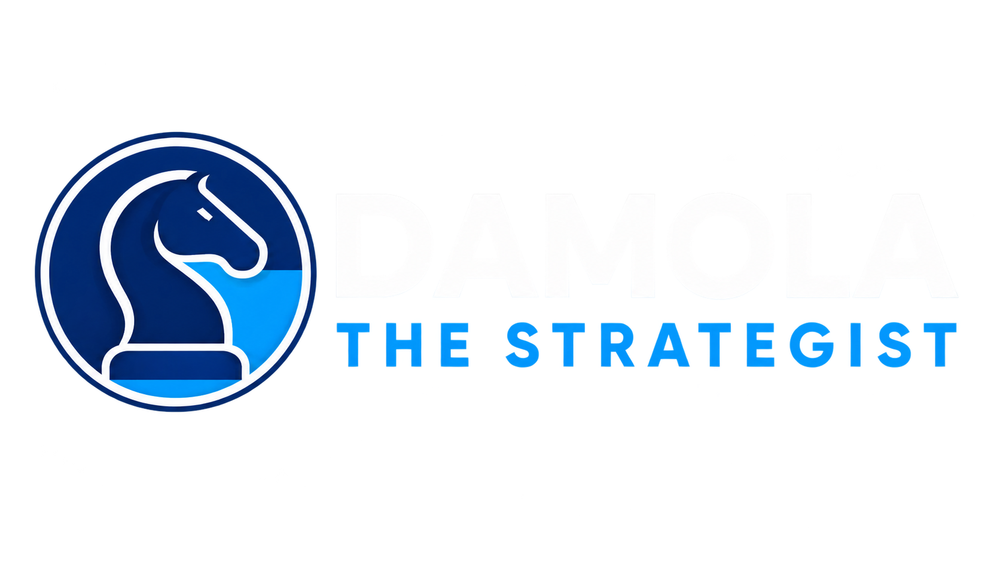
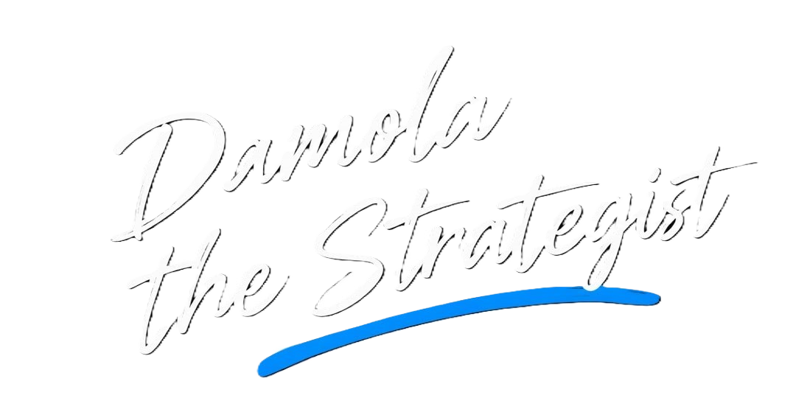

🔵WELCOME TO DIGITAL HQ
Damola thestrategist
Building. Learning. Creating. Becoming.
I'm a Computer Engineering student documenting my journey through technology, engineering, digital creativity and continous learning.
View My journey

About Me
I'm Damola, a Computer Engineering student passionate about technology, digital creativity, and continuous learning.
This website documents my journey, projects, skills, and the things I'm learning along the way.
What I'm Exploring
💻Technology & Engineering
🎨Digital creativity
🚀Continous Learning
Skills & Technologies
Tools I'm learning, skills I've developed, and areas I'm exploring.
Currently Learning
Actively learning and building hands-on.
Python
LearningProgramming fundamentals and automation.
Git & GitHub
LearningVersion control and collaboration.
DevOps
LearningDevelopment, deployment and infrastructure.
Web Development
LearningHTML, CSS and JavaScript.
Skills I Already Have
Skills I've developed and use in my work.
Graphics Design
SkilledVisual design, branding and creative work.
Digital Marketing
SkilledContent, marketing and online growth.
Social Media Management
SkilledContent planning and audience engagement.
Exploring
Looking into these next.
Backend Development
ExploringAPIs, databases and server-side development.
Cloud Engineering
ExploringCloud infrastructure and deployment.
AI
ExploringArtificial intelligence and automation.
Web3 / Blockchain
ExploringDecentralized technology and Web3.
My Journey
Projects & Builds
Things I've built, experimented with, and learned from along the way.
Python Fundamentals
A collection of small Python programs I built while learning programming fundamentals, from my first lines of code to simple programs involving variables, conditions, calculations, and problem-solving.
Church Registration Automation
An automation project created to simplify a church registration process by working with form responses and generating unique codes for participants.
Digital HQ
My personal digital space and portfolio, built to document my growth across technology, creativity, engineering, and the skills I'm developing along the way.
CHURCH MEDIA & STREAMING
A hands on media project involving livestream setup,video production,editng, and publishing church content across digital platforms.
Have an idea, project, or opportunity? let's build something meaningful.
I'm always open to connecting, collaborating, exploring ideas and opportunities to create, learn, and build.